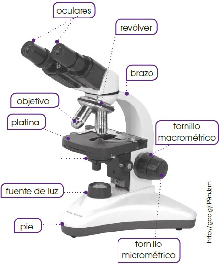
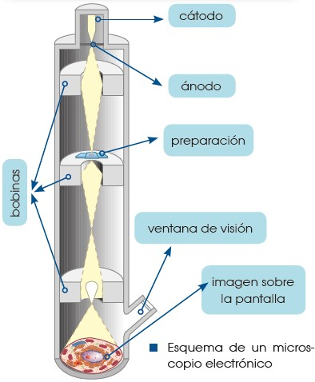

2 Microscopía
En cualquier ciencia, para poder avanzar en el conocimiento que poseemos sobre el funcionamiento del mundo que nos rodea, es importante seguir una serie de procedimientos y aplicar el método científico a nuestra investigación. En concreto, dentro de la biología, uno de los puntos más relevantes es la observación, pero, la base de cualquier ser vivo, la célula, no es visible al ojo humano. Para poder observar y estudiar células o estructuras más pequeñas que una célula, debemos utilizar técnicas como la microscopía.
2.1 Microscopía óptica
Esta técnica se basa en la observación de las células y los tejidos por medio del microscopio óptico. Este instrumento, ideado en el siglo XVII, abrió el camino de la investigación celular gracias a los estudios realizados por Robert Hooke y otros contemporáneos suyos. Hoy en día, aún continúa siendo muy útil, tanto en la investigación como en otros campos (microbiología, medicina…).
El microscopio óptico se basa en la capacidad de la luz para atravesar superficies muy finas. Contiene varias lentes que proporcionan un aumento de hasta 1500 veces y un poder de definición de 200 nm (0,2 micras). Es preciso llevar a cabo una serie de operaciones sobre el material que se quiere observar, para obtener una preparación; es decir, una muestra tratada para conseguir el máximo rendimiento del microscopio.

Elaboración de preparaciones
En la mayor parte de los casos, procedemos del modo siguiente:
Fijación: Esta operación estabiliza los componentes celulares, con el objetivo de que su aspecto sea tan parecido como sea posible al del tejido vivo. Empleamos formaldehído, ácido acético y alcohol etílico.
Deshidratación: El agua es un componente muy abundante en la mayoría de los tejidos y conviene eliminarla de la muestra para facilitar las operaciones posteriores. Para ello, sumergimos la muestra en diversos baños de alcohol de graduación creciente hasta llegar al alcohol absoluto, que produce una deshidratación total.
Inclusión: Los tejidos son, mayoritariamente, blandos y frágiles, por lo que resulta muy difícil hacer cortes finos sin estropear el material. Para evitar este problema, añadimos a la muestra una sustancia líquida que se interpone entre los componentes del tejido y que, después, se solidifica. Esta sustancia es, habitualmente, la parafina.
Corte: Cortamos la muestra incluida en parafina y solidificada en láminas muy finas con el microtomo. Obtenemos cortes de 1 a 25 μm de espesor que permiten el paso de la luz. Existen distintos diseños de microtomo. En los modelos más sencillos, el corte se hace a mano con una cuchilla muy afilada. En otros casos, los microtomos incorporan automatismos y son más precisos.
Montaje: Colocamos los cortes sobre un portaobjetos y cubrimos con xileno (o xilol), para eliminar el material de la inclusión y dejar la muestra lista para la acción de los colorantes.
Tinción: Las células, en su estado natural, son transparentes e incoloras y resultan, por lo tanto, casi invisibles; por ello, requerimos la aplicación de colorantes. Los colorantes presentan especificidad para unas sustancias concretas. De este modo, teñimos compartimentos celulares en los que predomina en su mayoría una determinada sustancia. La utilización de diversos tipos de colorantes sobre una célula permite distinguir distintos componentes celulares. Una de las técnicas de tinción más usada es la aplicación de hematoxilina y eosina (H-E). La eosina tiene carácter ácido y, por afinidad química, tiñe de color rosado las zonas de la célula en las que predomina el pH básico, fundamentalmente el citoplasma. La hematoxilina es de carácter básico y tiñe de color azulado los componentes ácidos de la célula. Por ello, es útil para destacar zonas, como el núcleo y algunas regiones citoplasmáticas, debido a su contenido en ácidos nucleicos. Después de aplicar los colorantes, lavamos el exceso y colocamos un cubreobjetos sobre la muestra.
Entre otros colorantes y componentes celulares teñidos tenemos:
| Colorante. | Componentes celulares teñidos. |
|---|---|
| Orceína-acética. | Cromosomas. |
| Verde-Yodo. | Cromatina. |
| Verde-Jano. | Mitocondrias. |
| Safranina. | Paredes celulares de celulosa. |
| Azul de toluidina. | Coloración general con elevado contraste. |
- Conservación: En el caso de las preparaciones que queremos conservar, sellamos el cubreobjetos con sustancias, como el bálsamo del Canadá, que evitan la entrada de aire y la putrefacción de la muestra.
Otra técnica habitual en microscopía óptica es el frotis, que llevamos a cabo con sustancias líquidas o semilíquidas, como la sangre, que extendemos sobre un portaobjetos formando una capa fina. A continuación, realizamos los procesos de fijación, deshidratación y tinción, y podemos observar la preparación sin necesidad de cubreobjetos.
2.2 Microscopía electrónica
Esta técnica se basa en la utilización de haces de electrones en lugar de luz. Existen distintos tipos de microscopios electrónicos.
El microscopio electrónico de transmisión permite la observación detallada del interior de las células.
La sustitución de la luz por electrones proporciona un poder de resolución de hasta 10 Angstrom (Å); es decir, la distancia mínima entre dos puntos próximos que pueden verse separados es de 10 Angstrom (Å). El número de aumentos puede llegar a 106 veces, valores muy superiores a los que se consiguen con el microscopio óptico.
Obtenemos las imágenes del modo siguiente:
Los electrones se producen en un filamento de tungsteno que constituye el cátodo y que está situado en la parte superior de un cilindro de unos dos metros de longitud. Para evitar que los electrones se dispersen al colisionar con las moléculas y los átomos de aire, mantenemos el vacío en el interior del cilindro.
Los electrones son atraídos hacia una placa con carga positiva, el ánodo. Entre el ánodo y el cátodo aplicamos una diferencia de potencial que aumenta la energía cinética de los electrones.
En el ánodo existe un pequeño orificio. Cuando los electrones lo atraviesan, obtenemos un haz fino de electrones.
Unas bobinas electromagnéticas actúan como lentes (condensadora, objetivo y de proyección) y enfocan el haz de electrones.
Colocamos la muestra en el interior del cilindro. Al atravesar la muestra, los electrones reducen su velocidad de distinta manera según las características de la parte de la muestra que atraviesan. Finalmente, inciden sobre una pantalla fluorescente, donde producen un punto luminoso cuya intensidad es directamente proporcional a la velocidad de los electrones.
